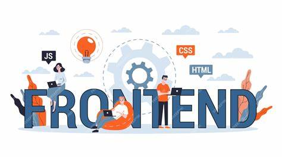

JEY DEVELOPERS' HUB

Home Page
About Us
Contact Us
Welcome to JEY Developers' Hub Portfolio
ABOUT ME
SKILLS
PROJECTS
EXPERIENCES
- Front-End Developer at Dataforte Academy (Jan 2025 to date)
- Collaborated with designers and back-end developers to create user-centric web applications.
- Implemented responsive design principles to enhance mobile user experience.
- Web Developer Intern at MSORG Dev. (2024-2025)
- Assisted in developing and maintaining the company's main website, improving load times by optimizing images and scripts.